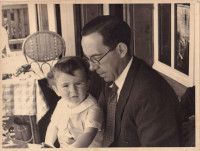

Claude Adolphe Georges SAINT-LÉGER — Né le 24/03/1897 à Lille — Décédé le 14/12/1944 à Basseux (Pas-de-Calais)
Claude Adolphe Georges SAINT-LÉGER
Né le 24/03/1897 à Lille
Décédé le 14/12/1944 à Basseux (Pas-de-Calais)
Résumé
Claude Adolphe Georges Saint-Léger naît le 24 mars 1897 à Lille, 118 ter rue Royale, fils d'André Saint-Léger et de Marguerite Delemer. Sa vie se partage entre l'industrie textile du Nord et deux guerres mondiales.
Le 23 août 1915, à dix-huit ans, il quitte clandestinement Lille occupée avec son cousin Max Descamps. Il traverse le Nord et la Belgique en se dérobant aux patrouilles allemandes, franchit à la nage le canal de Gand à Terneuzen après plusieurs tentatives, gagne la Hollande puis l'Angleterre, où il remet aux officiers britanniques des renseignements sur les tranchées et les batteries allemandes devant Lille. Le 20 octobre 1915, il s'engage volontairement pour la durée de la guerre au 32e régiment de dragons, sous le nom de Claude de La Valette, adopté pour ne pas exposer sa famille restée en zone occupée. Arrivé aux armées le 21 mai 1916, élève aspirant le 10 février 1918, il passe le 8 avril 1918 au 26e bataillon de chasseurs à pied, où il commande une section de mitrailleuses. Trois citations lui valent la Croix de guerre 1914-1918 : à l'ordre du régiment le 6 avril 1917, puis à l'ordre de la 166e division d'infanterie les 17 octobre et 18 novembre 1918. La qualité de combattant volontaire lui est reconnue le 19 septembre 1930.
Démobilisé en septembre 1919, il dirige d'abord la filature familiale de La Madeleine, puis les Établissements Agache à partir de 1923, l'une des plus importantes entreprises françaises de filature de lin, de chanvre et de coton. Le 24 juin 1923, il épouse Agnès Sabine Madeleine Marie Wattinne (1904-1993), réunissant par cette union les réseaux Saint-Léger-Agache et Wattinne-Bossut-Prouvost, deux ensembles familiaux du textile nordiste liés aux Droulers, Bossut et Prouvost. Administrateur des Établissements Agache en 1923, il en devient administrateur-délégué en 1929. En avril 1925, il se présente aux élections municipales de Lille sur la liste de l'Union républicaine des intérêts lillois. Au centenaire des Établissements Agache, en septembre 1928, père et fils figurent côte à côte parmi les administrateurs réunis autour de Donat Agache. Un décret du 13 mars 1933 le nomme chevalier de la Légion d'honneur à titre militaire.
Père de famille nombreuse et affecté spécial dans ses usines, il n'est pas mobilisable en 1939. Il demande néanmoins à reprendre du service, est réintégré dans les cadres actifs le 16 novembre 1939 et rejoint le 3 décembre la 3e compagnie de mitrailleuses de la défense aérienne du territoire, au Croisé-Laroche près de Lille. Après la reddition de la poche de Dunkerque, il tente de gagner l'Angleterre, passe dix heures en mer, échoue et est fait prisonnier à Mardyck le 20 juin 1940. Ramené à Lille, il refuse une libération conditionnée à la remise en marche de ses usines pour l'occupant. Il est interné à l'Oflag VIII-A de Kreuzburg, en Silésie, sous le matricule 25190, où il préside l'amicale des Enfants du Nord. Libéré le 15 octobre 1941 au titre d'ancien combattant, il rentre et est démobilisé le 21 octobre.
En voyage en Algérie pour les filatures Agache au moment du débarquement allié du 8 novembre 1942, il choisit de ne pas rentrer en France. Chargé de mission au cabinet du délégué général à l'Économie à Alger, puis secrétaire général du comité d'organisation du textile, il quitte volontairement ces fonctions civiles en août 1943 pour s'engager dans l'armée, à quarante-six ans, et est incorporé le 13 novembre 1943 à Alger. Envoyé en Angleterre fin janvier 1944, il arrive à Liverpool le 12 février et suit à Southlands, Parkside, à Wimbledon, le cours d'officier de liaison de campagne de la Mission militaire de liaison administrative, sous l'autorité du commandant de Boislambert et du commandant Clémenceau. Il termine ce cours le 27 avril 1944 et est attaché au Civil Affairs, le service allié chargé de rétablir les autorités civiles françaises et les services publics dans les territoires libérés, en liaison avec les préfectures et les municipalités.
Il quitte l'Angleterre le 7 juin 1944, au lendemain du Jour J, et débarque en Normandie le 17 juin. Chef de la mission de liaison auprès du 8e corps britannique, il mène l'évacuation des populations civiles dans le secteur du Bény-Bocage, se portant constamment à l'avant sous le feu, et fait campagne avec ce corps d'armée jusqu'au début du mois de septembre.
Paris est libéré le 25 août 1944. Claude y passe deux jours avec Agnès et leurs enfants, avenue Frédéric Le Play, après plus de deux ans de séparation. Sa première mission s'achève là.
Promu officier de liaison administrative de 3e classe, assimilé commandant à compter du 12 juin 1944, il exerce à partir du 1er septembre les fonctions de chef de bataillon et prend la tête de la mission L of C (Lines of Communications), chargée de la coordination des voies d'approvisionnement, de transport et de communication entre les zones de combat et les bases arrière. C'est le plus haut poste de la mission franco-britannique dans le nord de la France libérée. Les officiers de liaison français n'étant pas autorisés à se rendre en Belgique, il établit son poste à Amiens, où il travaille étroitement avec la préfecture de la Somme. Il choisit Amiens plutôt que Lille pour ne pas mêler ses fonctions militaires à ses intérêts industriels, renonce à toute rémunération chez Agache à compter du 1er octobre 1944 et demande à plusieurs reprises sa mutation vers une unité combattante.
Le 14 décembre 1944, vers 19 heures, venant d'Amiens et se dirigeant sur Lille en service commandé, sa Citroën traction avant percute dans un brouillard très épais un semi-remorque britannique sur la RN 25, à un kilomètre au sud-ouest de Beaumetz-les-Loges, sur le territoire de Basseux, dans le Pas-de-Calais. Il est tué sur le coup, à quarante-sept ans. Ses obsèques ont lieu le 16 décembre à l'église du Sacré-Cœur de Lille et il est inhumé au cimetière de La Madeleine. Une citation à titre posthume comportant l'attribution de la Croix de guerre 1939-1945 avec palme lui est décernée le 13 mars 1945, signée Charles de Gaulle, et publiée au Journal officiel du 19 avril 1945 ; cette citation porte par erreur la date du 15 décembre. La mention « Mort pour la France » est apposée à son dossier le 22 mars 1945 et portée à son acte d'état civil en 1954.
Un dossier individuel est conservé à son nom au Service historique de la Défense, à Vincennes, dans la sous-série GR 16 P des dossiers administratifs du bureau Résistance (cote GR 16 P 530758). L'existence de cette cote atteste l'ouverture d'un dossier, non l'attribution d'un titre : en l'état des pièces connues, Claude Saint-Léger n'est pas homologué. Les recherches se poursuivent. Un second dossier, celui de son décès, est conservé au SHD de Caen (cote AC 21 P 148010).
Les Établissements Agache, auxquels il avait consacré vingt ans de sa carrière, seront absorbés en 1967 par les frères Willot, puis passeront sous le contrôle de Bernard Arnault, qui en fera le noyau du futur groupe LVMH.
Sources :
- données familiales (gedcom)
- Stéphane Jacquet et Marc Henri Barrabé, La percée du bocage, vol. 3, Heimdal, 2014 (ISBN 978-2-84048-587-2)
- Le Réveil économique, 3 octobre 1928 (RetroNews/BnF)
- La Journée industrielle, 11 septembre 1928 (RetroNews/BnF)
- Le Journal des débats, 12 septembre 1928
- L'Information financière, 20 février 1924 (RetroNews/BnF)
- Le Nord maritime, 29 avril 1925 (RetroNews/BnF)
- Base Léonore, Archives nationales, cote LH/2430/55
- Mémoire des Hommes, SHD, cote GR 16 P 530758
- Mémoire des Hommes, SHD, cote AC 21 P 148010
- Service historique de la Défense (Vincennes), dossier administratif du bureau Résistance, cote GR 16 P 530758, communication du 28 mai 2026
- Service historique de la Défense (Caen), dossier de décès, cote AC 21 P 148010, dossier n° 14767, communication du 8 juin 2026
- The National Archives (Kew), War Diary du 223 Civil Affairs Detachment, WO 171/3587
- Journal officiel, 19 avril 1945 (RetroNews/BnF)
- Archives départementales du Nord, matricule 1R 3365
- Lettre du commandant Darnay (HQ L of C), 22 décembre 1944, archives familiales Saint-Léger
- Récits d'Agnès Wattinne, vers 1985, archives familiales Saint-Léger
- Correspondances d'Alger et de Londres, 1942-1944, archives familiales Saint-Léger
{kind=link}

{kind=link}
{kind=link}
{kind=link}
{kind=link}
{kind=link}
{kind=link}
{kind=link}
{kind=link}
{kind=link}
{kind=link}
{kind=link}
📷 Cliquez pour voir 12 photo(s)
Arbre généalogique
29/09/1870 — 25/08/1952
Marguerite DELEMER
13/03/1876 — 28/10/1953
31/10/1875 — 08/12/1927
Madeleine DROULERS
23/01/1883 — 23/02/1974
Chronologie
Correspondances
Evenements
Militaire
Sommaire
Évasion de Lille · Engagé volontaire au 32e régiment de dragons · Passé au 26e bataillon de chasseurs à pied · Mise en sursis · Mobilisé volontaire 1939 · Capturé à Mardyck, interné à l'Oflag VIII-A · Libéré de captivité · Chargé de mission à Alger · Incorporation à Alger · Départ pour l'Angleterre, formation d'officier de liaison · Débarquement en Normandie, officier de liaison · Fonctions de chef de bataillon, à Amiens · Mort en service commandé